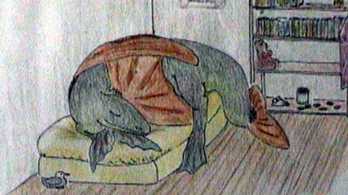

Jeff Shrager, PhD. Chief Scientist, Bennu Climate, Inc, jshrager@bennuclimate.com
My personal email is jshrager@gmail.com, and here's my linkedin account. See my vita for more details regarding my research.
I was an adjunct professor in the Symbolic Systems Program at Stanford from about 2000-2025. Students seeking a letter of recommendation should contact me at jshrager@gmail.com
(If you're looking for the Stanford surgeon, Dr. Joseph Shrager, see: https://med.stanford.edu/profiles/joseph-shrager)
